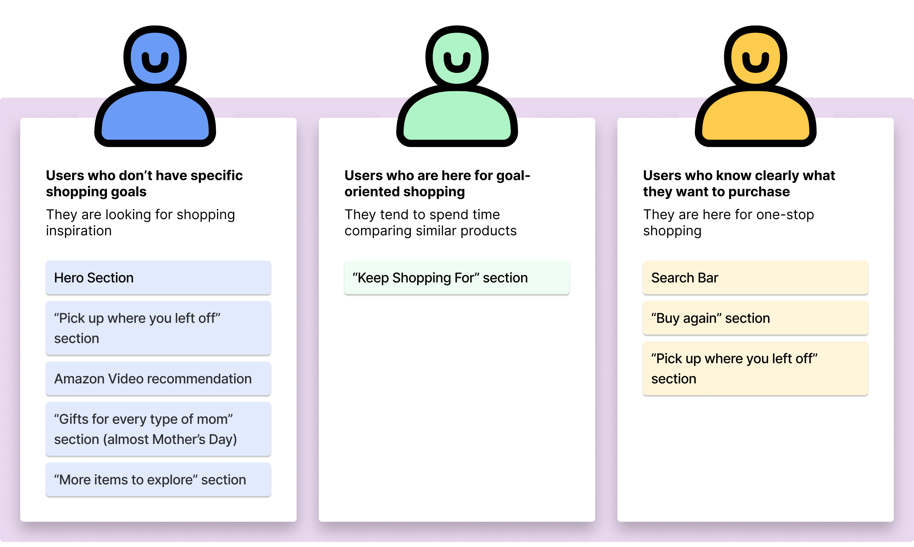
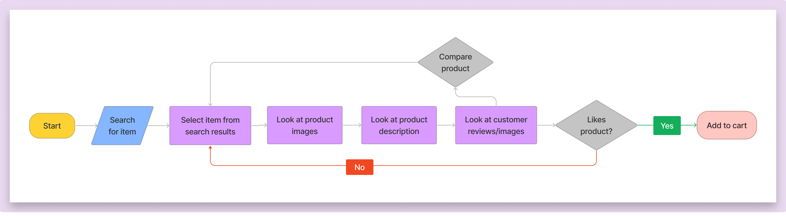
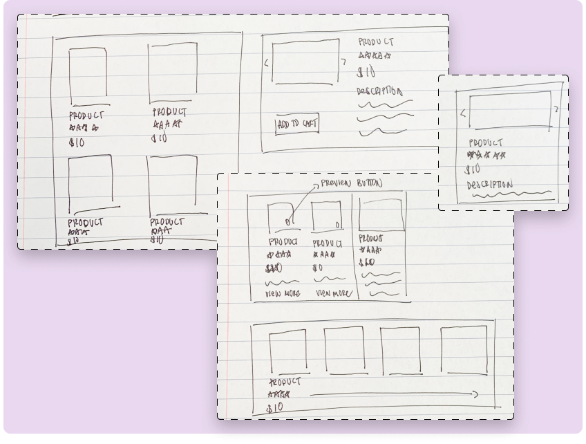
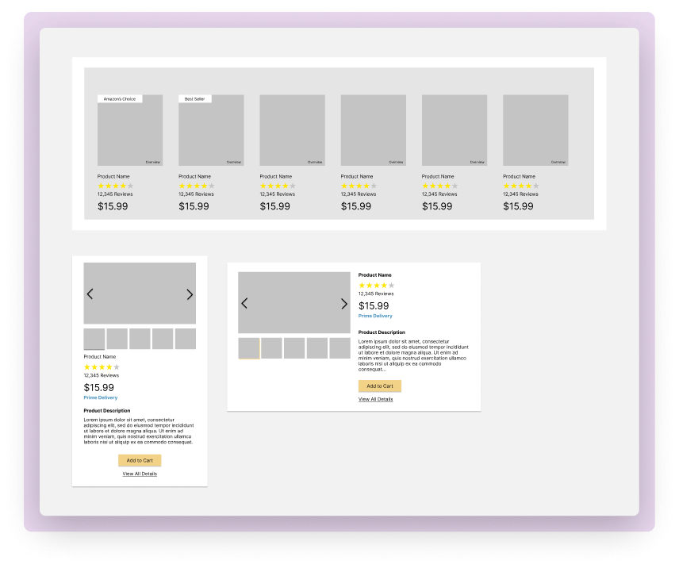
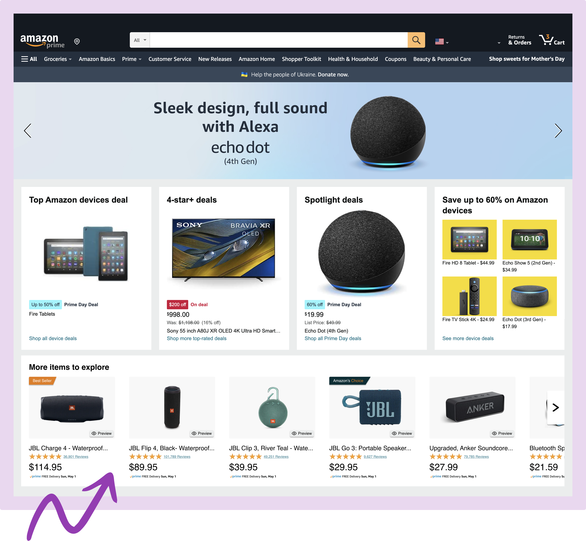
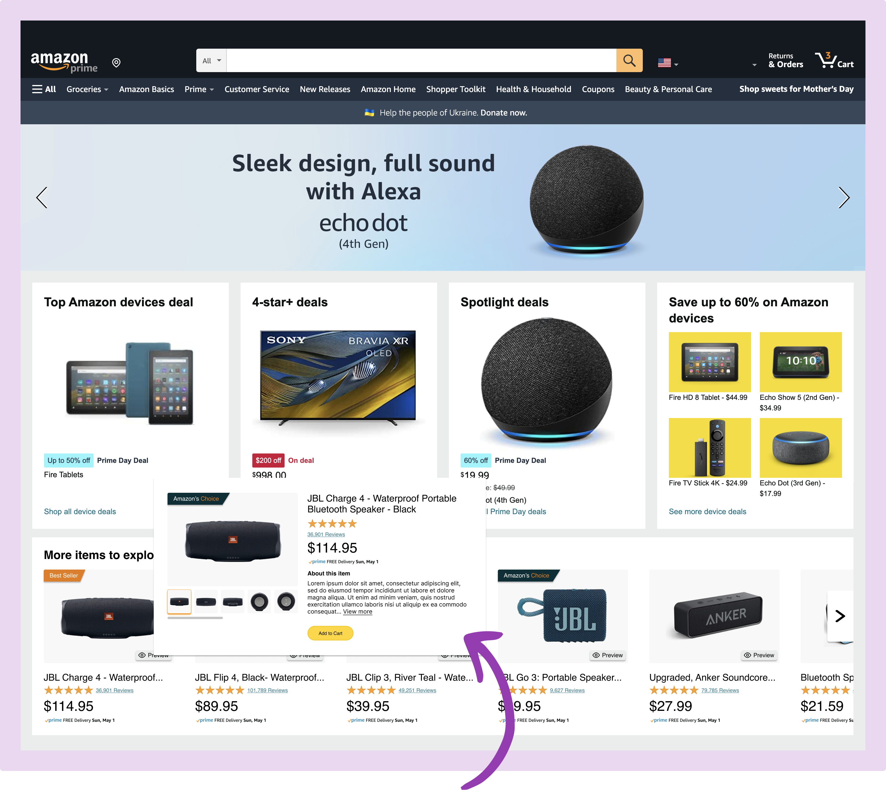

Amazon Redesign
A redesign of Amazon's homepage to better cater towards users who use Amazon for goal-oriented shopping
Duration
May 2022, 3 Days
Role
Designer, Researcher
Tools
Figma, FigJam
Context
As part of an interview process, I was given a take home assignment to redesign Amazon's homepage over the course of three days. With the limited time I had, I focused on designing a solution for the target user and thoroughly explaining how I reached my solution.
Design Prompt
Amazon is a super app that expands to different verticals: online purchase, pharmacy, grocery, video and so on. There are broadly 3 types of users on Amazon:
Type 1: Users who don’t have specific shopping goals: they want to get inspired by what Amazon recommends.
Type 2: Users who are here for goal-oriented shopping: they tend to spend time comparing between similar products.
Type 3: Users who know clearly what to purchase and are here for one-stop shopping.
Pick a target user type who you don’t feel is well served by Amazon. How would you redesign Amazon’s homepage to appeal to that user type?
Understand
Observations
After reading the design prompt, I wanted to get a deeper understand the current layout and flow of Amazon’s current homepage. I went through the different sections on the homepage and took notes of my observations.
From my observations, I was able to understand which sections were more catered towards a specific user. Due to the time constraints, I made educated assumptions about which section every type of user in the prompt would be most likely to use. I found that goal-oriented shoppers were the least represented on Amazon's homepage.

Contextual Inquiry
To get a better understanding of goal-oriented shoppers, I decided to conduct a contextual inquiry. I observed a user while they searched for a specific product on Amazon and asked them to walk me through how they would compare products when deciding which one to purchase.
Although, one user is not representative of Amazon's entire user base, any user research I was able to conduct in the short timespan provided essential information to help understand the user needs and frustrations.

Key Findings
Using the insights from my observations and the contextual inquiry, I was able to identify key user pain points.
- There is nothing on the homepage to facilitate easy comparison between products
- Users are not able to see full product details on the homepage
- It is difficult for users to remember features of when comparing different products, as users have to go back and forth between pages when comparing
Define
Using the limited research I had, I created a problem statement to clearly define the problem and guide me throughout my brainstorming process.
How might we help goal-oriented shoppers easily compare products and customer reviews on Amazon’s homepage?
Ideation
Sketches
After brainstorming possible different designs and features for the homepage, I put pen to paper and began sketching my ideas out.

Low Fidelity Wireframes
With a basic framework and layout in mind, I began converting my sketches into low-fidelity wireframes. During this process I was able to add more details that would help the user compare products.

Final Designs
"More Items to Explore" Section
Here, there is a new section where the user can scroll through items under a category they have searched for in the past.
The user can see the product image, the product title, how many stars it is rated, the number of reviews, the price, and if it has Prime shipping. These highlighted features were added based on what was important to the user during the contextual inquiry.

Preview Feature
On this screen, the user can use the preview feature to see more details about the product without having to commit to loading a new page.
When the user clicks on “Preview” they will see a popup with more details about the product. The user can see more product images and the product description. The user can also choose to add the product to their cart.
A popup feature allows the user to compare products next to each other without having to go back and forth between products.

Reflection
Working with such a short turnaround time forced me to carefully manage my time and work efficiently. I had to prioritize certain features and steps in my design process over others. Nonetheless, in the end I felt I was able to design a feature for Amazon’s homepage that meets the target user’s needs and frustrations.
Future Steps
If I had more time, I would want to prototype the interaction and move forward with user testing. Due to the time constraints I had to make more assumptions than I would’ve liked to, so usability testing would give me valuable feedback and allow me to iterate based on the feedback.
I would also like to explore the experience and interactions when a user compares products in the search results, not just on the homepage.

Edsight Design System
Rethinking data visualizations for education

Oloid Internship
Reflecting on my time as a product design intern at Oloid
last updated april 2023